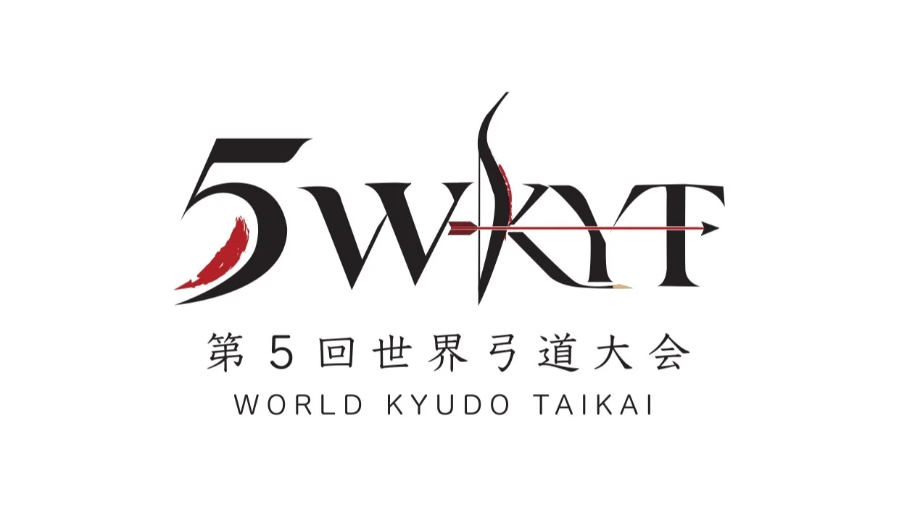
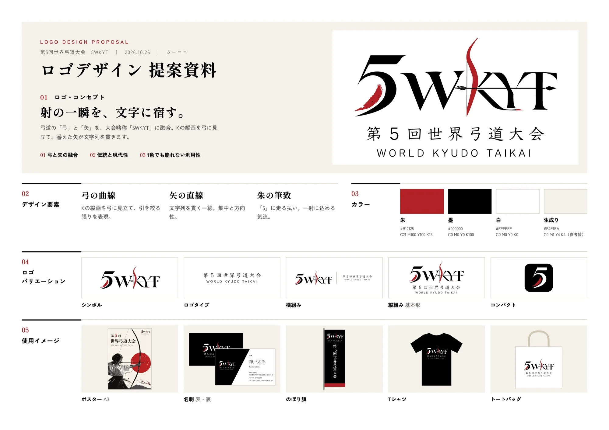

Logo Design
世界弓道大会 — World Kyudo Taikai
Software UsedIllustrator, Photoshop
Duration2026
Deliverableロゴ・A3ポスター・名刺（表・裏）・提案資料
RoleGraphic Designer
Theme射の一瞬を、文字に宿す。— 弓と矢を大会略称「5WKYT」に融合したロゴ

// overview
Project Overview
「第5回世界弓道大会（5th World Kyudo Taikai）」のロゴデザインを提案した課題です。大会略称「5WKYT」をもとにロゴマークを制作し、A3ポスター・名刺へと展開。コンセプトからカラー、ロゴバリエーション、使用イメージまでを1枚の提案資料にまとめました。
// concept
射の一瞬を、文字に宿す。
弓道の「弓」と「矢」を、大会略称「5WKYT」の文字そのものに融合させました。Kの縦画を弓に見立て、番えた矢が文字列を貫く構成です。伝統的な競技らしさと現代的なすっきりした印象を両立させ、1色でも崩れない汎用性を意識しています。

// design elements
3つのデザイン要素
01
弓の曲線
Kの縦画を弓に見立て、引き絞った弓の張りを表現。
02
矢の直線
文字列を一直線に貫く矢で、集中と方向性を表現。
03
朱の筆致
「5」に走る朱色の払いで、一射に込める気迫を表現。
// color
Color Palette
和の伝統色を思わせる朱と墨を軸に、白と生成りを組み合わせた4色で構成しました。
朱 Shu
#B12125
墨 Sumi
#000000
白 Shiro
#FFFFFF
生成り Kinari
#F4F1EA
// applications
 Business Card · Front
Business Card · Front
 Business Card · Back
Business Card · Back
Applications — Poster & Business Card
ロゴをA3ポスターと名刺に展開しました。ポスターでは弓を引く射手と朱の日の丸、桜と富士山を組み合わせ、国際大会としての「日本らしさ」を一目で伝える構成にしています。
Business Card · FrontBusiness Card · Back
// proposal
Logo Design Proposal
コンセプト・デザイン要素・カラー・ロゴバリエーション（シンボル／ロゴタイプ／横組み／縦組み／コンパクト）・使用イメージ（ポスター、名刺、のぼり旗、Tシャツ、トートバッグ）を1枚にまとめた提案資料です。

// reflection
Reflection
文字と競技のモチーフをどう1つのマークにまとめるかが一番の課題でした。弓と矢を別の要素として添えるのではなく、文字の一部として組み込むことで、シンプルでありながら弓道らしさが伝わるロゴになったと感じています。ポスターや名刺、グッズへ展開してみることで、ロゴがさまざまなサイズや背景色でも機能するかを確かめる大切さも学びました。